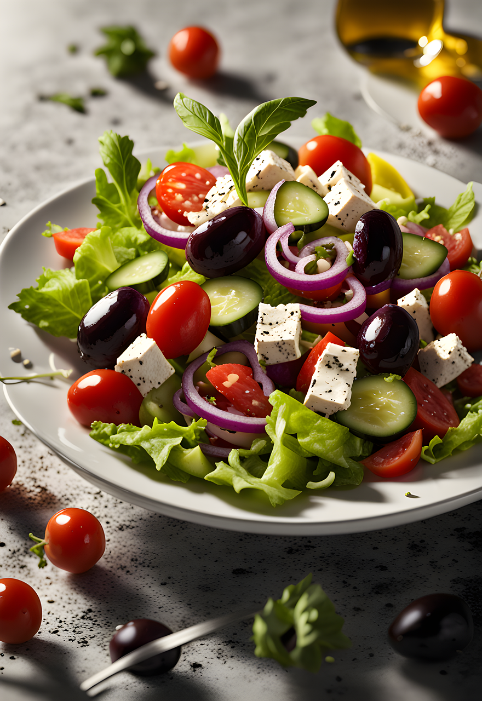

Everyday Green Salad
← Back to Odin Recipes

Description
A quick green salad that works as a side dish or a light lunch.
You can easily customise it with whatever veggies you have.
Ingredients
- 2 handfuls mixed salad leaves
- 1 small cucumber, sliced
- 10 cherry tomatoes, halved
- 1 small red onion, thinly sliced
- 2 tbsp olive oil
- 1 tbsp lemon juice or vinegar
- Salt and pepper, to taste
Steps
- Place the salad leaves in a large bowl.
- Add the cucumber, tomatoes, and red onion.
- In a small bowl, whisk together olive oil and lemon juice or vinegar.
- Season the dressing with salt and pepper.
- Pour the dressing over the salad and toss gently.
- Serve immediately as a side or on its own.